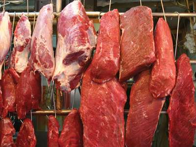
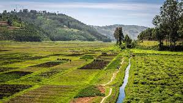
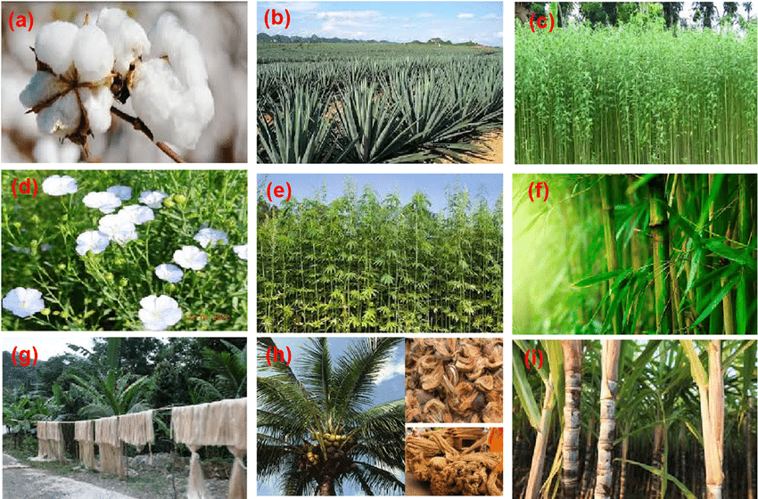

Roles Of Animal Husbandry In Human Welfare
Animal husbandry is beneficial to human beings in several ways. Some of them are:
- Dairy Products:
Dairy products or milk products are a type of food produced from or containing the milk of mammals, most commonly cattle, water buffaloes, goats, sheep, and camels. Dairy products include food items such as yogurt, cheese and butter. Animals such as cows, goats, sheep, etc. are the major source of milk and milk products such as yoghurt, cheese, butter, etc. A facility that produces dairy products is known as a dairy, or dairy factory.

- Meat:
Meat is animal flesh that is eaten as food. Humans have hunted and killed animals for meat since prehistoric times. Scientific evidence indicates that human ancestors began incorporating meat and marrow into their diets more than 2.6 million years ago.

- Land Managment:
Land management is the process of managing the use and development (in both urban and rural settings, but it is mostly managed in Urban places.) of land resources. Land resources are used for a variety of purposes which may include organic agriculture, reforestation, water resource management and eco-tourism projects.

- Fibre:
Fiber crops are plants that are deliberately grown for the production of fiber for textile (clothes), cordage (e.g., ropes), and filling (e.g., stuffing upholstery and mattresses). Cotton, jute, kenaf, industrial hemp, sun hemp, and flax are among the well-known fiber crops. Animals also produce fibres or textiles such as wool and leather. For eg, sheep are reared for wool whereas leather can be obtained from camel.

- Manure:
Manure is organic matter that is used as organic fertilizer in agriculture. Most manure consists of animal feces; other sources include compost and green manure. The excreta, blood and bones of animals are used as manure. The manure is spread on the fields to increase the crop yields and crop production. It is also used as fuel for fires and as plaster for walls and floor.
.jpg)
- Labour:
Animals are a source of non-human labour. They are used for ploughing fields, transporting goods and military functions. For ages, horses, yaks and donkeys are used for such purposes.
.jpg)
Advantages of Animal Husbandry